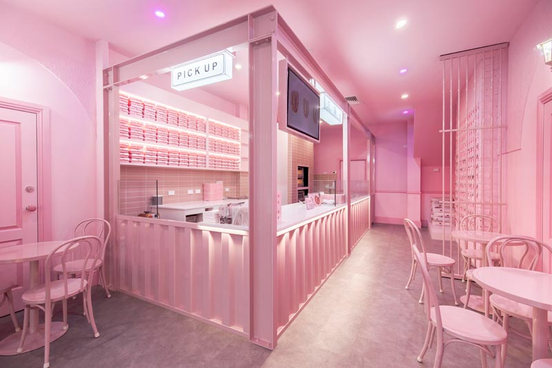
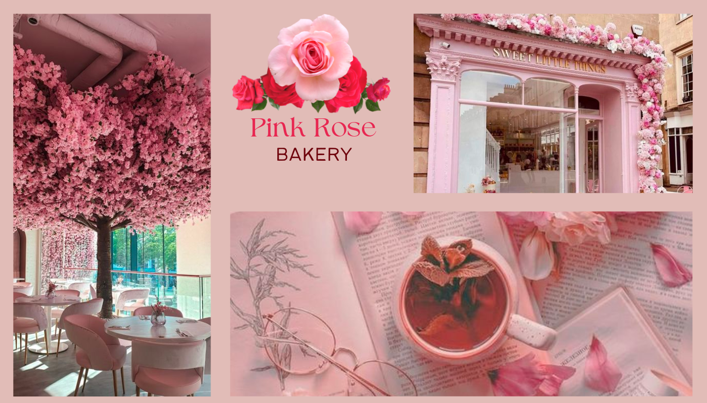
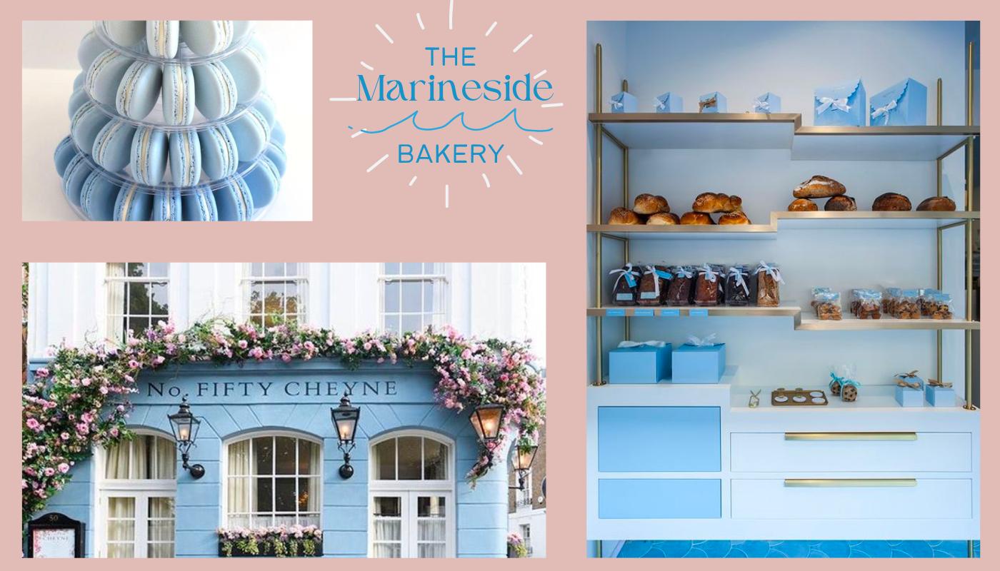
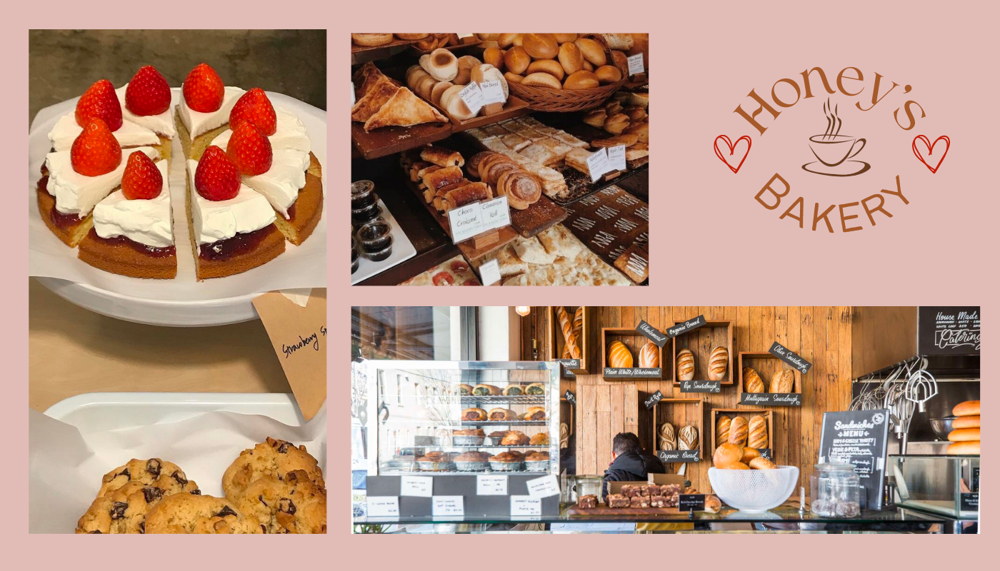

Bakeries
Top four most best bakeries in Faerieland
With each bakehouse being unique in their own ways, here is a list of the top four most greatest bakeries in all of Faerieland.
1. Pink Rose Bakery

Coming in at number one and covered in beautiful pink roses from head to toe, this bakery has it all.
The appealing decoration and romantic aura of the bakery invites many citizens of Faerieland everyday. Known for their
spectacular candied rose petals covered in sugar and in many colours, the Pink Rose Bakery has recieved notable nominations for the best and most unique pastries.
2. The Marineside Bakery

At second place is the Marineside Bakery, a gorgeous baby blue building which is branched off of the award-winning Oceanside Restaurant and the Seaside Restaurant at Crystal Beach.
This bakery includes pastries of all kind like their exceptional golden croissants or very popular blue moon macarons.
'
3. Honey's Bakery

Serving classic pastries and desserts, Honey's Bakery is perfect for having a breakfast with family or a hangout with friends. With their large selection of savoury foods,
their homemade sourdough bread is known to be the best whether it's sprinkled with herbs or just laquered with a nice layer of butter.
4. Bon Bon Bakery

Aside from its very interesting name, this bakery is the most pinkest place in all of Faerieland. Bon Bon Bakery includes the amazing Angelina pudding in their menu,
an exclusive food item found commonly in Capyparlasen, a Tenarvian region.
Pictures from Pink Rose Bakery

Pictures from the Marineside Bakery

Pictures from Honey's Bakery

Pictures from Bon Bon Bakery


 Home
Places to go
About
Home
Places to go
About